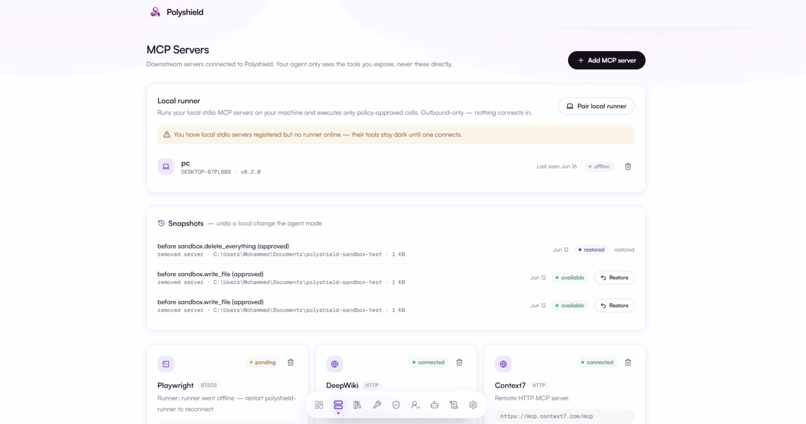

AI agent safety
Polyshield
Approval, policy, and audit infrastructure for AI coding agents using local MCP tools.
Polyshield started from a practical problem: coding agents are no longer just writing suggestions, they can touch files, git, browsers, databases, and local services. I am building the control layer between the agent and those tools so risky actions can be inspected, approved, logged, and constrained before they execute.
- Built a local runner that pairs with the Polyshield gateway and launches stdio MCP servers.
- Designed outbound polling so the user's machine does not need inbound ports or tunnels.
- Added sandbox-oriented controls: scoped working directories, stripped environments, timeouts, snapshots, and dry-run diffs for filesystem-confined calls.
- Modeled the product around policies, human approvals, audit trails, credential isolation, and prompt-injection defenses.
